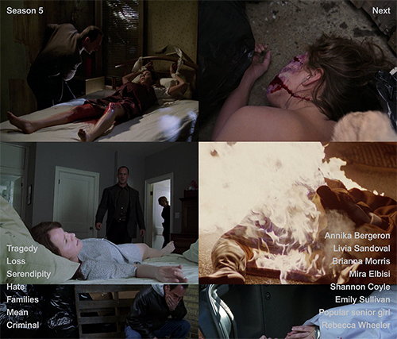
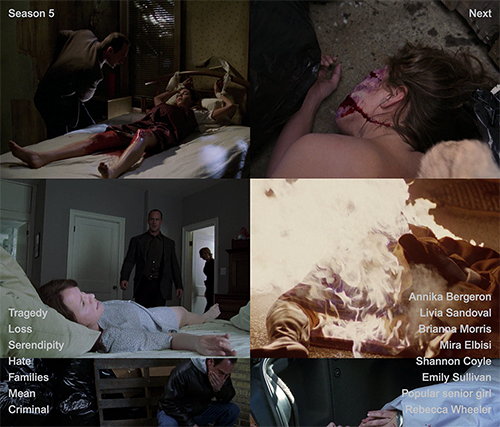
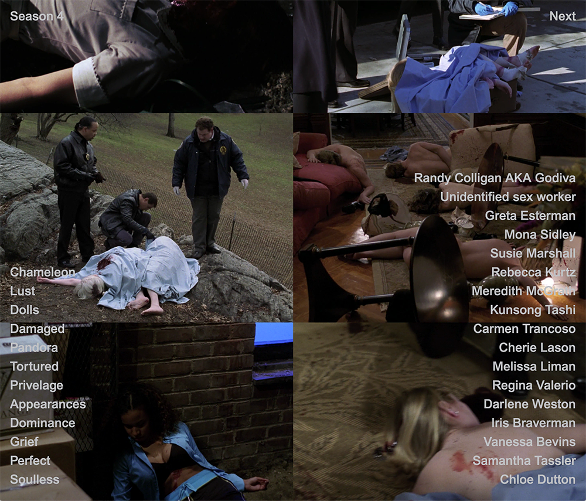
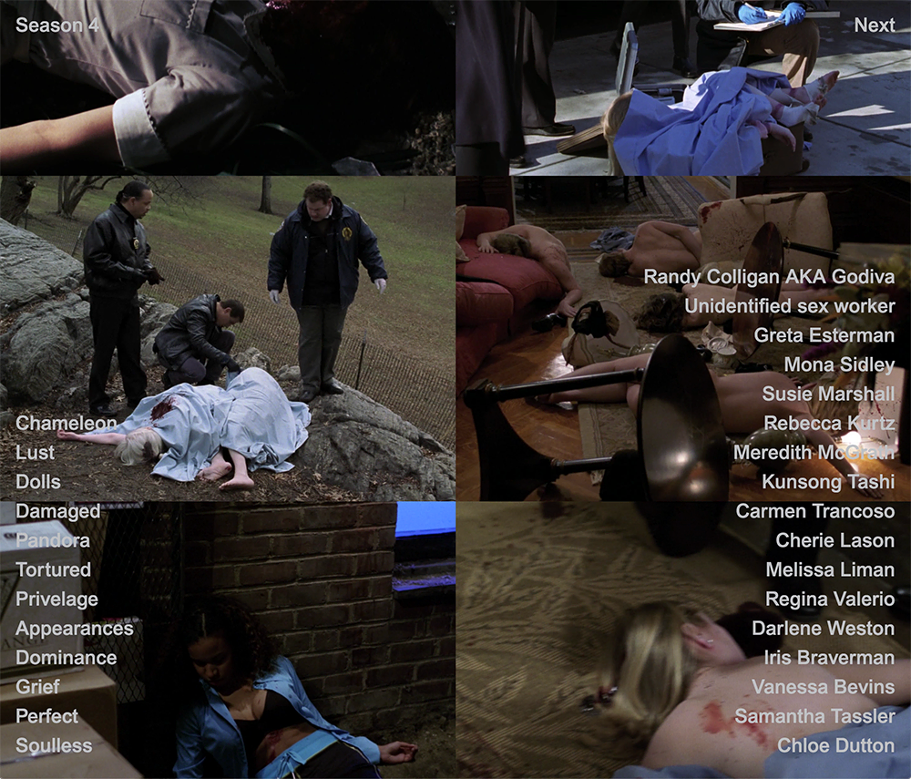

SVU Dead Girls
Website Design and Development, 2019.
A digital memorial to/ archive of the 148 women and girls murdered during the first 20 seasons of Law & Order: SVU. The website’s landing page is a gravestone engraved with one of their names at a time. The user must click on the name to advance through all 148 of the murdered women and girls. The SVU opening credits “dun dun” plays with each click. This sound is humorous at first, but quickly becomes grating. Fake flowers rest at the bottom of the page as well as links to individual SVU season pages. Within each season page are gridded screenshots of the Dead Girls killed during that season as well as their names and the titles of the episodes in which they were killed.
 



 
